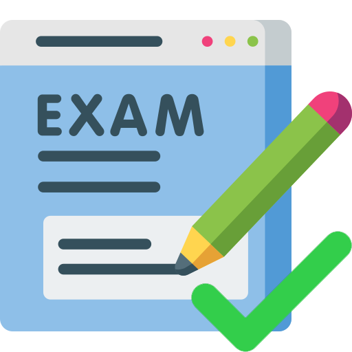
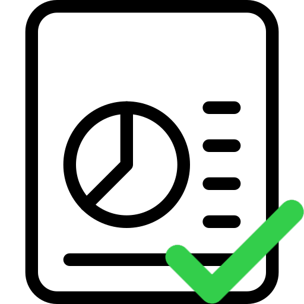
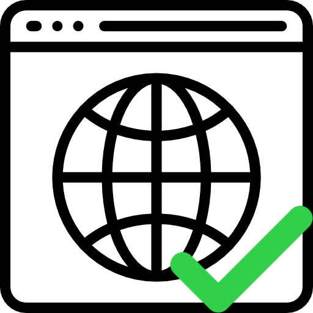
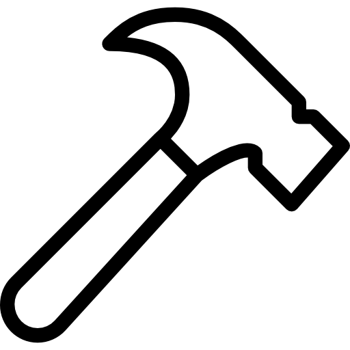

Finished the exam
Now that I have handed over the URL and pdf i'm finally done with this exam. This exam has taught me many things, including: coding, Improving my skills with the Adobe Programs and team-works. I'm saying teamwork even though this exam is not a group-project, but that I have helped and recived help from my classmate.
Post made 18-12-2020

Finished writing the report
After some hard-working days, and with some help I'm finally done writing the report for the exam and now only reamins fact-checking
Post made 15-12-2020

Done coding the website for the exam
After all these hard working days, i'm done coding this website. Indeed I like how it looks now, but I know it needs lots more improvement and that will happen in the near future!
Post made 14-12-2020
Began working on the report
This report is for the purpose of showing that I understand the making of the website, and the I know all the things that I must know about making them. I.e. Color theroym, C.R.A.P principles etc.
Post made 13-12-2020

Started making the website!
I just started working on the website. This is going to be a long journey but I hope that it'll be worth it in the end, and that you'll enjoy it.
Post made 01-12-2020